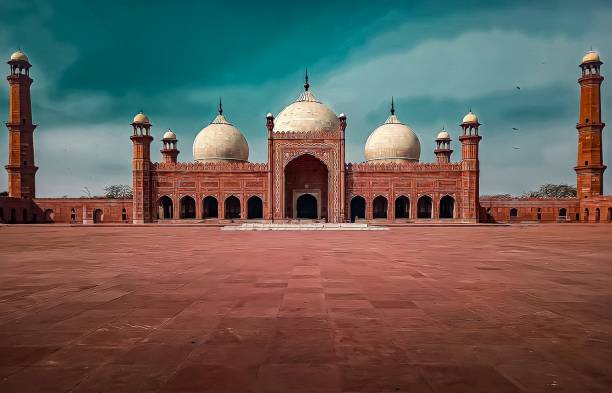

About Badshahi Masjid
The Badshahi Masjid, or the Royal Mosque, is an iconic symbol of Mughal architecture located in Lahore, Pakistan. Commissioned by the Mughal Emperor Aurangzeb in 1671, it was completed in just two years and is renowned for its grand scale and intricate design. The mosque features a stunning red sandstone structure adorned with beautiful white marble inlays, reflecting the architectural prowess of the era. Capable of accommodating up to 55,000 worshippers, it was the largest mosque in the world at the time of its completion. The mosque not only serves as a place of worship but also as a testament to the cultural and historical significance of the Mughal Empire, showcasing the artistry and engineering skills of its builders.
